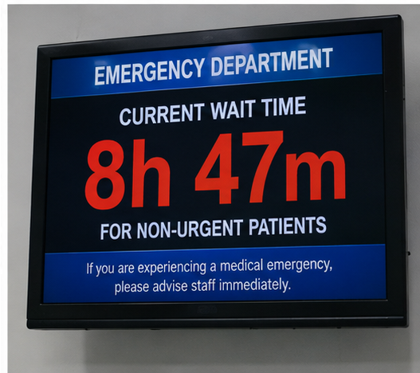

Defined eligibility
Hospital-approved criteria guide which CTAS Level 4 and 5 patients may be considered.
For hospital leaders
TriageConnect is a hospital-led model for evaluating secure virtual physician support for appropriate CTAS Level 4 and 5 patients.
Request a DemonstrationThe operational challenge
Hospitals must balance patient safety, staffing, flow, privacy, technology, and clinical governance—often under significant pressure.
TriageConnect is designed as an additional hospital-approved pathway, not a replacement for existing emergency services.

A configurable model
Hospital-approved criteria guide which CTAS Level 4 and 5 patients may be considered.
Workflows, escalation, documentation, and accountability are aligned before launch.
Implementation planning considers the hospital’s security, privacy, and integration requirements.
Pilot measures can include flow, experience, utilization, safety, and operational feasibility.
Pilot pathway
Review current pressures, goals, service hours, patient groups, and stakeholders.
Define eligibility, triage, virtual assessment, documentation, escalation, and oversight.
Confirm physician, technology, privacy, training, and operational requirements.
Launch a defined pilot, monitor agreed measures, and assess next steps.
Hospital demonstration
We will focus the discussion on your current workflow and the questions your clinical and operational leaders need answered.